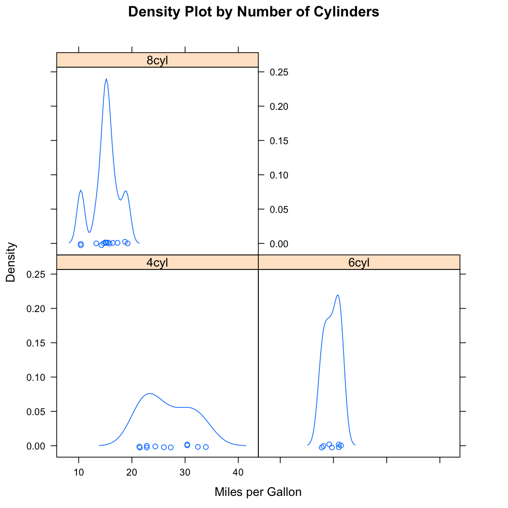

Description
This is a hands-on introduction to the R language, with a number of examples and exercises designed to give you a basic feel for R.
By Landon Sego of Pacific Northwest National Laboratory and Veronica Bunn of the Florida State University
If you are running these examples on RStudio server:
- Connect to the RStudio server and execute the commands of the examples
- You may want to save the R code and data to your local computer, and then
upload the code and data to the RStudio server using the
Uploadbutton the menu of the lower right panel. This way you can run the code without having to copy and paste every line
If you are running these examples on your local computer:
- Install R: http://www.r-project.org
- Install RStudio (desktop version): http://www.rstudio.com
- Open RStudio (or R) and execute the commands of the examples
- You may want to save the R code and data to your local computer and open the files in RStudio. This way you can run the code without having to copy and paste every line
Activity 1: Preliminaries
Activity 1.1: Help commands
After entering any computer program, it's always a good idea to know how to exit.
To quit R at any time, simply type the following at the prompt:
q()
When you don't know exactly what you're looking for, search for a topic. There are two ways to do this:
help.search("graphics")
??graphics
When you know the name of the R function, e.g. the function
rnorm() that generates random normal data, there are two ways to do this:
help(rnorm)
?rnorm
Sometimes you just need a reminder about the arguments (the
inputs) of a function. The args() function can help in
this situation. Here are the arguments for the rnorm()
function:
args(rnorm)
function (n, mean = 0, sd = 1)
NULL
Examples are often included in the documentation of functions
at the bottom of the documentation. Look at the bottom of
the help file of the seq() function:
?seq
You can execute the example code for a function all at once
using the example() function:
example(seq)
seq> seq(0, 1, length.out = 11)
[1] 0.0 0.1 0.2 0.3 0.4 0.5 0.6 0.7 0.8 0.9 1.0
seq> seq(stats::rnorm(20)) # effectively 'along'
[1] 1 2 3 4 5 6 7 8 9 10 11 12 13 14 15 16 17 18 19 20
seq> seq(1, 9, by = 2) # matches 'end'
[1] 1 3 5 7 9
seq> seq(1, 9, by = pi) # stays below 'end'
[1] 1.000000 4.141593 7.283185
seq> seq(1, 6, by = 3)
[1] 1 4
seq> seq(1.575, 5.125, by = 0.05)
[1] 1.575 1.625 1.675 1.725 1.775 1.825 1.875 1.925 1.975 2.025 2.075
[12] 2.125 2.175 2.225 2.275 2.325 2.375 2.425 2.475 2.525 2.575 2.625
[23] 2.675 2.725 2.775 2.825 2.875 2.925 2.975 3.025 3.075 3.125 3.175
[34] 3.225 3.275 3.325 3.375 3.425 3.475 3.525 3.575 3.625 3.675 3.725
[45] 3.775 3.825 3.875 3.925 3.975 4.025 4.075 4.125 4.175 4.225 4.275
[56] 4.325 4.375 4.425 4.475 4.525 4.575 4.625 4.675 4.725 4.775 4.825
[67] 4.875 4.925 4.975 5.025 5.075 5.125
seq> seq(17) # same as 1:17, or even better seq_len(17)
[1] 1 2 3 4 5 6 7 8 9 10 11 12 13 14 15 16 17
Activity 1.2: Demos
Some R packages include demonstrations you can run to learn about their capability. Be sure to hit "Enter" to cycle through the components of each demo.
Here's one from the graphics package, which gives a nice
demonstration of the breadth of graphical capability in R.
demo("graphics")
And here's one about generalized linear models (glm):
demo(lm.glm)
Activity 1.3: R as a calculator
Addition:
7 + 3
[1] 10
Subtraction:
7 - 3
[1] 4
Multiplication:
7 * 3
[1] 21
Division:
7 / 3
[1] 2.333333
Integer division:
7 %/% 3
[1] 2
Division remainder (the modulo):
7 %% 3
[1] 1
Exponentiation:
exp(7)
[1] 1096.633
Natural logarithm:
log(7)
[1] 1.94591
Base 10 log:
log10(1000)
[1] 3
Examples of common mathematical functions and constants:
sqrt(16)
[1] 4
cos(pi)
[1] -1
Powers: 2 to the 5th:
2^5
[1] 32
Large and small numbers:
1.7e+05
[1] 170000
1.7e-03
[1] 0.0017
And there are numerous statistical functions. For example: The probability a standard normal random variable takes a value of 1.96 or lower:
pnorm(1.96)
[1] 0.9750021
And the probability of 4 heads in 12 fair coin flips:
dbinom(4, 12, 0.5)
[1] 0.1208496
And, best of all, it handles division by 0 gracefully :)
1 / 0
[1] Inf
R can also perform all the standard matrix operations: inner and outer products, matrix multiplication, matrix inversion, transpose, eigen vectors and values, various decompositions, etc. It has built-in numerical routines for root-finding, optimization, integration, differentiation, etc.
Activity 2: Data Structures
Activity 2.1: Numeric vectors
Numeric vectors are the fundamental building blocks of R. Most of the techniques shown in this activity apply to any type of vector, be it a numeric, character, or logical vector.
Suppose you wish to create an object x and assign it a
value of 5. There are two ways to do this:
x = 5
x <- 5
Display the object:
x
[1] 5
Note that R is CaSe SenSiTivE!
w <- 10
W <- 12
The cat() function prints text to the screen, which is
useful for writing messages. The "\n" is the newline
character.
cat("Little w =", w, "is different than big W =", W, "\n")
Little w = 10 is different than big W = 12
You can create a numeric vector from 1 to 6 and display it three different ways.
x0 <- c(1, 2, 3, 4, 5, 6)
x1 <- seq(1, 6, by = 1)
x2 <- 1:6
View these three objects:
x0
[1] 1 2 3 4 5 6
x1
[1] 1 2 3 4 5 6
x2
[1] 1 2 3 4 5 6
Here's a sequence from 1 to 22 stepping by 3.
x <- seq(1, 22, by = 3)
x
[1] 1 4 7 10 13 16 19 22
This operation will square the elements of x.
This is a 'vectorized' calculation. This means it squares
each element indvidually and so there is no need to loop
over each element.
y <- x^2
y
[1] 1 16 49 100 169 256 361 484
Assign a value to m:
m = 0.5
Another vectorized calculation: multiple each element of y
by m:
y * m
[1] 0.5 8.0 24.5 50.0 84.5 128.0 180.5 242.0
Take the natural lograthrim of of each element of y:
log(y)
[1] 0.000000 2.772589 3.891820 4.605170 5.129899 5.545177 5.888878 6.182085
Add two sequences together, elementwise:
1:3 + 2:4
[1] 3 5 7
Suppose a vector is so long we don't want to display all of it. Let's create a vector of 500 random numbers from a normal distribution with mean of 3 and standard deviation of 2.
x <- rnorm(500, mean = 3, sd = 2)
The str() (structure) function tells us what type of object
x is and provides some examples of the first few values.
str(x)
num [1:500] 4.066 0.323 4.457 2.351 1.22 ...
The length() function returns the number of elements in x.
length(x)
[1] 500
We can calculate the sum, mean, max, min, and standard deviation.
sum(x)
[1] 1550.919
mean(x)
[1] 3.101839
max(x)
[1] 9.282706
min(x)
[1] -2.323566
sd(x)
[1] 1.984143
The summary() function provides summary statistics.
summary(x)
Min. 1st Qu. Median Mean 3rd Qu. Max.
-2.324 1.751 3.096 3.102 4.511 9.283
The head() and tail() functions shows the first or last 6 elements, respectively.
head(x)
[1] 4.0658885 0.3231175 4.4572866 2.3510877 1.2196960 4.1409517
tail(x)
[1] 2.9917702 3.6270783 0.7242536 4.3765526 5.1170512 1.7675644
We can easily extract elements of vectors. For example,
let's grab the 7th element of y:
y <- 1:10
y[7]
[1] 7
Or let's select the 1st, 3rd, and 5th elements of y:
y[c(1,3,5)]
[1] 1 3 5
Or the 6th through 8th elements:
y[6:8]
[1] 6 7 8
To select elements that are less than 4, we first make an indicator, which is a vector of TRUE and FALSE elements indicating whether the elements are less than 4.
indicator <- y < 4
indicator
[1] TRUE TRUE TRUE FALSE FALSE FALSE FALSE FALSE FALSE FALSE
And now we select elements that are less than 4 from y:
y[indicator]
[1] 1 2 3
Another useful tool for generating vectors is the rep()
function. A vector of seven 1's:
z <- rep(1, 7)
z
[1] 1 1 1 1 1 1 1
A sequence of 1 to 5, repeated twice:
rep(1:5, 2)
[1] 1 2 3 4 5 1 2 3 4 5
Another style of repeating, elementwise:
rep(1:5, each = 2)
[1] 1 1 2 2 3 3 4 4 5 5
Exercise 2.1: Numeric vectors
1) Create a vector from 3 to 11, in steps of 2.
2) Create another vector from 12 to 4 in steps of -2.
3) Display the last 2 elements of the second vector.
4) Calculate the mean of the element-wise product of these two vectors.
Activity 2.2: Character vectors
Character vectors allow you to store non-numeric data. They are used in R all the time.
We refer to vectors of characters as strings. To create a character vector, we do the following:
x = c("this", "that", "those")
x
[1] "this" "that" "those"
Extracting characters is the same as extracting elements.
x[2:3]
[1] "that" "those"
There are numerous functions for parsing, searching, and connecting text. For example:
y <- c("cat", "dog", "fish")
paste(x, y)
[1] "this cat" "that dog" "those fish"
Or we can extract parts of the strings, known as substrings. In this case, we extract the first 3 letters of each element, beginning at position 1, ending at position 3.
substr(x, 1, 3)
[1] "thi" "tha" "tho"
Count the number of characters in each element:
nchar(x)
[1] 4 4 5
Search for the string "s" in each element of x and return
a logical vector:
sIndicator <- grepl("s", x)
sIndicator
[1] TRUE FALSE TRUE
Select only those words that have "s":
x[sIndicator]
[1] "this" "those"
We can test if a value is in the string using %in%. Here, we
use an indicator variable to subset the original vector.
mammalIndicator <- y %in% c("cat", "dog")
mammalIndicator
[1] TRUE TRUE FALSE
Now select the mammals from y:
y[mammalIndicator]
[1] "cat" "dog"
Regarding quotes: R will accept double or single quotes for all character strings. Use both in the same statement if you need to nest them.
x <- "A string with 'inner quotes'"
x
[1] "A string with 'inner quotes'"
cat(x, "\n")
A string with 'inner quotes'
Exercise 2.2: Character vectors
1) Create a character vector consisting of nouns (of the length of your choosing).
2) Create a second character vector of same length with verbs.
3) Paste the two vectors together.
4) Count the total number of characters in the entire noun
vector. Hint, use the sum function.
Activity 2.3: Logical vectors
Logical vectors are used to select subsets of data and define logical expressions in R programming.
To create a logical vector:
z <- c(TRUE, FALSE, TRUE, TRUE)
z
[1] TRUE FALSE TRUE TRUE
Or, equivalently:
z <- c(T, F, T, T)
z
[1] TRUE FALSE TRUE TRUE
We can select elements like any other vector.
z[c(2,4)]
[1] FALSE TRUE
The which() function returns the indexes of a logical vector
that are TRUE.
which(z)
[1] 1 3 4
And we can summarize over each element in the vector. For
example, the any() function returns TRUE if any elements are
TRUE.
any(z)
[1] TRUE
And the all() function returns TRUE if all elments are
TRUE.
all(z)
[1] FALSE
We can also count the number of true values in a logical
vector using the sum() function.
sum(z)
[1] 3
And we can negate a logical vector.
!z
[1] FALSE TRUE FALSE FALSE
Let's create another logical vector, which will be TRUE for the elements of 1,2,3,4 that are <= 2 :
y <- 1:4 <= 2
y
[1] TRUE TRUE FALSE FALSE
We can perform 'and' comparisons betwen two logical vectors, elementwise.
z & y
[1] TRUE FALSE FALSE FALSE
As well as 'or' comparisons, elementwise.
z | y
[1] TRUE TRUE TRUE TRUE
Exercise 2.3: Logical vectors
1) Create random numeric vector of length 1000 with values
uniformly chosen between 0 and 1. Hint: use the runif
function.
2) Count the number of elements in the vector that fall in the interval [0.2, 0.8]. On average, it should be 600.
Activity 1.2.4: Integer and complex vectors
For most applications in R, it will likely not make a difference if you represent integer values as 'numeric'. The difference between the 'integer' and 'numeric' classes is that objects of class 'integer' are coded as type 'int' in the primitive C or Fortran code that is running underneath the R interpeter, and objects of class 'numeric' are usually typed as 'double'. But it might be important to you in some cases.
Notice this results in an integer:
x <- 1:3
str(x)
int [1:3] 1 2 3
is.integer(x)
[1] TRUE
Whereas these end up being numeric:
str(c(1, 2, 3))
num [1:3] 1 2 3
str(seq(1, 3, 1))
num [1:3] 1 2 3
There are two fullproof ways to create integer vectors. Here are two identical approaches:
x1 <- as.integer(c(1, 5, -2))
x2 <- c(1L, 5L, -2L)
x1
[1] 1 5 -2
x2
[1] 1 5 -2
Note how they are identical (not juse in value, but also in type).
identical(x1, x2)
[1] TRUE
Whereas if we create a numeric vector, they are not identical because x1 is of class 'integer' and x3 is of class 'numeric'.
x3 <- c(1, 2, 3)
identical(x1, x3)
[1] FALSE
R can also store and perform mathematical operations with complex values (a + bi). Here's a complex vector:
v1 <- complex(real = 1:3, imaginary = 4:6)
v1
[1] 1+4i 2+5i 3+6i
str(v1)
cplx [1:3] 1+4i 2+5i 3+6i
And here are some operations on the complex vector, the sum, and extracting the real and imaginary portions of the vector.
sum(v1)
[1] 6+15i
Re(v1)
[1] 1 2 3
Im(v1)
[1] 4 5 6
See ?complex for more details.
Activity 2.5: Named vectors
The elements of vectors in R can be named for convenience. Here's how to create a named vector:
aNamedVec <- c(type = 1, count = 7, max = 10)
aNamedVec
type count max
1 7 10
You can also assign names using quoted strings, which can include spaces or special characters:
bNamedVec <- c("a type" = 1, "b%type" = 7)
bNamedVec
a type b%type
1 7
And you can extract elements of a named vector by the names. Notice how the name is displayed, along with the value of the vector.
aNamedVec["type"]
type
1
Suppose you would like extract the element without the name. You can do this using the 'double brace' syntax:
aNamedVec[["type"]]
[1] 1
And you can extract more than one element:
aNamedVec[c("type", "max")]
type max
1 10
But attempting to strip the names when you extract more than one element doesn't work:
aNamedVec[[c("type", "max")]]
Error in aNamedVec[[c("type", "max")]]: attempt to select more than one element
Speaking of removing names, here's how you can do that:
names(aNamedVec) <- NULL
aNamedVec
[1] 1 7 10
And you can use names() to put the names back in again, or
to change the names
names(aNamedVec) <- c("type1", "count1", "max1")
aNamedVec
type1 count1 max1
1 7 10
And you can extract the names as well:
names(aNamedVec)
[1] "type1" "count1" "max1"
These naming principles apply to any type of vector: integer, numeric, character, logical, or complex
Exercise 2.5: Named vectors
1) Create a named character vector of length 3.
2) Create a second named logical vector of length 3.
3) Switch the names of the 2 vectors.
Activity 2.6: Data frames
Data frames consist of rows and columns (like a spreadsheet). They are the most common way to store data in R. Columns can be of any type: numeric, character, logical, complex, or factors. (We haven't learned about factors--that's a more advanced topic).
Here's how we could manually create a simple data frame:
df <- data.frame(a = 1:6, b = letters[1:6],
c = rep(c(TRUE, FALSE), each = 3))
df
a b c
1 1 a TRUE
2 2 b TRUE
3 3 c TRUE
4 4 d FALSE
5 5 e FALSE
6 6 f FALSE
And here's a more interesting data frame with the specs of various automobiles that is included in the datasets package that comes with R:
mtcars
mpg cyl disp hp drat wt qsec vs am gear carb
Mazda RX4 21.0 6 160.0 110 3.90 2.620 16.46 0 1 4 4
Mazda RX4 Wag 21.0 6 160.0 110 3.90 2.875 17.02 0 1 4 4
Datsun 710 22.8 4 108.0 93 3.85 2.320 18.61 1 1 4 1
Hornet 4 Drive 21.4 6 258.0 110 3.08 3.215 19.44 1 0 3 1
Hornet Sportabout 18.7 8 360.0 175 3.15 3.440 17.02 0 0 3 2
Valiant 18.1 6 225.0 105 2.76 3.460 20.22 1 0 3 1
Duster 360 14.3 8 360.0 245 3.21 3.570 15.84 0 0 3 4
Merc 240D 24.4 4 146.7 62 3.69 3.190 20.00 1 0 4 2
Merc 230 22.8 4 140.8 95 3.92 3.150 22.90 1 0 4 2
Merc 280 19.2 6 167.6 123 3.92 3.440 18.30 1 0 4 4
Merc 280C 17.8 6 167.6 123 3.92 3.440 18.90 1 0 4 4
Merc 450SE 16.4 8 275.8 180 3.07 4.070 17.40 0 0 3 3
Merc 450SL 17.3 8 275.8 180 3.07 3.730 17.60 0 0 3 3
Merc 450SLC 15.2 8 275.8 180 3.07 3.780 18.00 0 0 3 3
Cadillac Fleetwood 10.4 8 472.0 205 2.93 5.250 17.98 0 0 3 4
Lincoln Continental 10.4 8 460.0 215 3.00 5.424 17.82 0 0 3 4
Chrysler Imperial 14.7 8 440.0 230 3.23 5.345 17.42 0 0 3 4
Fiat 128 32.4 4 78.7 66 4.08 2.200 19.47 1 1 4 1
Honda Civic 30.4 4 75.7 52 4.93 1.615 18.52 1 1 4 2
Toyota Corolla 33.9 4 71.1 65 4.22 1.835 19.90 1 1 4 1
Toyota Corona 21.5 4 120.1 97 3.70 2.465 20.01 1 0 3 1
Dodge Challenger 15.5 8 318.0 150 2.76 3.520 16.87 0 0 3 2
AMC Javelin 15.2 8 304.0 150 3.15 3.435 17.30 0 0 3 2
Camaro Z28 13.3 8 350.0 245 3.73 3.840 15.41 0 0 3 4
Pontiac Firebird 19.2 8 400.0 175 3.08 3.845 17.05 0 0 3 2
Fiat X1-9 27.3 4 79.0 66 4.08 1.935 18.90 1 1 4 1
Porsche 914-2 26.0 4 120.3 91 4.43 2.140 16.70 0 1 5 2
Lotus Europa 30.4 4 95.1 113 3.77 1.513 16.90 1 1 5 2
Ford Pantera L 15.8 8 351.0 264 4.22 3.170 14.50 0 1 5 4
Ferrari Dino 19.7 6 145.0 175 3.62 2.770 15.50 0 1 5 6
Maserati Bora 15.0 8 301.0 335 3.54 3.570 14.60 0 1 5 8
Volvo 142E 21.4 4 121.0 109 4.11 2.780 18.60 1 1 4 2
There are a number of tools to extract info from data frames and create subsets.
The str function tells the names and types of variables in
the data frame.
str(mtcars)
'data.frame': 32 obs. of 11 variables:
$ mpg : num 21 21 22.8 21.4 18.7 18.1 14.3 24.4 22.8 19.2 ...
$ cyl : num 6 6 4 6 8 6 8 4 4 6 ...
$ disp: num 160 160 108 258 360 ...
$ hp : num 110 110 93 110 175 105 245 62 95 123 ...
$ drat: num 3.9 3.9 3.85 3.08 3.15 2.76 3.21 3.69 3.92 3.92 ...
$ wt : num 2.62 2.88 2.32 3.21 3.44 ...
$ qsec: num 16.5 17 18.6 19.4 17 ...
$ vs : num 0 0 1 1 0 1 0 1 1 1 ...
$ am : num 1 1 1 0 0 0 0 0 0 0 ...
$ gear: num 4 4 4 3 3 3 3 4 4 4 ...
$ carb: num 4 4 1 1 2 1 4 2 2 4 ...
Look at the first 6 rows of the data frame:
head(mtcars)
mpg cyl disp hp drat wt qsec vs am gear carb
Mazda RX4 21.0 6 160 110 3.90 2.620 16.46 0 1 4 4
Mazda RX4 Wag 21.0 6 160 110 3.90 2.875 17.02 0 1 4 4
Datsun 710 22.8 4 108 93 3.85 2.320 18.61 1 1 4 1
Hornet 4 Drive 21.4 6 258 110 3.08 3.215 19.44 1 0 3 1
Hornet Sportabout 18.7 8 360 175 3.15 3.440 17.02 0 0 3 2
Valiant 18.1 6 225 105 2.76 3.460 20.22 1 0 3 1
We can display the number of rows.
nrow(mtcars)
[1] 32
We can display the number of columns.
ncol(mtcars)
[1] 11
We can extract the rownames as a character vector.
rownames(mtcars)
[1] "Mazda RX4" "Mazda RX4 Wag" "Datsun 710"
[4] "Hornet 4 Drive" "Hornet Sportabout" "Valiant"
[7] "Duster 360" "Merc 240D" "Merc 230"
[10] "Merc 280" "Merc 280C" "Merc 450SE"
[13] "Merc 450SL" "Merc 450SLC" "Cadillac Fleetwood"
[16] "Lincoln Continental" "Chrysler Imperial" "Fiat 128"
[19] "Honda Civic" "Toyota Corolla" "Toyota Corona"
[22] "Dodge Challenger" "AMC Javelin" "Camaro Z28"
[25] "Pontiac Firebird" "Fiat X1-9" "Porsche 914-2"
[28] "Lotus Europa" "Ford Pantera L" "Ferrari Dino"
[31] "Maserati Bora" "Volvo 142E"
We can extract the colum names as a character vector.
colnames(mtcars)
[1] "mpg" "cyl" "disp" "hp" "drat" "wt" "qsec" "vs" "am" "gear"
[11] "carb"
And we can see summaries of each column.
summary(mtcars)
mpg cyl disp hp
Min. :10.40 Min. :4.000 Min. : 71.1 Min. : 52.0
1st Qu.:15.43 1st Qu.:4.000 1st Qu.:120.8 1st Qu.: 96.5
Median :19.20 Median :6.000 Median :196.3 Median :123.0
Mean :20.09 Mean :6.188 Mean :230.7 Mean :146.7
3rd Qu.:22.80 3rd Qu.:8.000 3rd Qu.:326.0 3rd Qu.:180.0
Max. :33.90 Max. :8.000 Max. :472.0 Max. :335.0
drat wt qsec vs
Min. :2.760 Min. :1.513 Min. :14.50 Min. :0.0000
1st Qu.:3.080 1st Qu.:2.581 1st Qu.:16.89 1st Qu.:0.0000
Median :3.695 Median :3.325 Median :17.71 Median :0.0000
Mean :3.597 Mean :3.217 Mean :17.85 Mean :0.4375
3rd Qu.:3.920 3rd Qu.:3.610 3rd Qu.:18.90 3rd Qu.:1.0000
Max. :4.930 Max. :5.424 Max. :22.90 Max. :1.0000
am gear carb
Min. :0.0000 Min. :3.000 Min. :1.000
1st Qu.:0.0000 1st Qu.:3.000 1st Qu.:2.000
Median :0.0000 Median :4.000 Median :2.000
Mean :0.4062 Mean :3.688 Mean :2.812
3rd Qu.:1.0000 3rd Qu.:4.000 3rd Qu.:4.000
Max. :1.0000 Max. :5.000 Max. :8.000
We can subset a data frame similar to the way we extracted elements from vectors. For example, let's extract the 3rd row and 4th column of mtcars.
mtcars[3, 4]
[1] 93
Equivalently, we could have used the row and column name to extract the data:
mtcars["Datsun 710", "hp"]
[1] 93
In general, using the row and column name is a better programming practice than using just the row or column numbers because it makes code easier to read and there's no mistaking which rows or columns were selected.
Alternativaly, you can specify rows 3, 4, and 5. These two statements give the same result:
mtcars[3:5, ]
mpg cyl disp hp drat wt qsec vs am gear carb
Datsun 710 22.8 4 108 93 3.85 2.320 18.61 1 1 4 1
Hornet 4 Drive 21.4 6 258 110 3.08 3.215 19.44 1 0 3 1
Hornet Sportabout 18.7 8 360 175 3.15 3.440 17.02 0 0 3 2
mtcars[c("Datsun 710", "Hornet 4 Drive", "Hornet Sportabout"),]
mpg cyl disp hp drat wt qsec vs am gear carb
Datsun 710 22.8 4 108 93 3.85 2.320 18.61 1 1 4 1
Hornet 4 Drive 21.4 6 258 110 3.08 3.215 19.44 1 0 3 1
Hornet Sportabout 18.7 8 360 175 3.15 3.440 17.02 0 0 3 2
Or extract multiple rows and columns simultaneously. These are equivalent:
mtcars[c(1,30), c(1, 5:7)]
mpg drat wt qsec
Mazda RX4 21.0 3.90 2.62 16.46
Ferrari Dino 19.7 3.62 2.77 15.50
mtcars[c("Mazda RX4", "Ferrari Dino"), c("mpg", "drat",
"wt", "qsec")]
mpg drat wt qsec
Mazda RX4 21.0 3.90 2.62 16.46
Ferrari Dino 19.7 3.62 2.77 15.50
Suppose we wish to look at the vehicles that have high power but still good gas mileage (e.g. cars with horsepower > 150 and mpg > 15):
indicator <- (mtcars[,"hp"] > 150) & (mtcars[,"mpg"] > 15)
mtcars[indicator, c("hp", "mpg")]
hp mpg
Hornet Sportabout 175 18.7
Merc 450SE 180 16.4
Merc 450SL 180 17.3
Merc 450SLC 180 15.2
Pontiac Firebird 175 19.2
Ford Pantera L 264 15.8
Ferrari Dino 175 19.7
Suppose we wish to exclude Japanese-made cars from the data:
japanese <- c("Mazda RX4", "Mazda RX4 Wag", "Datsun 710",
"Honda Civic", "Toyota Corolla", "Toyota Corona")
japaneseInd <- rownames(mtcars) %in% japanese
nonJapan <- mtcars[!japaneseInd,]
Did we get them all? If so, these two numbers should be the same.
nrow(mtcars) - nrow(nonJapan)
[1] 6
length(japanese)
[1] 6
And as if there weren't enough options, a single column can be extracted from a data frame using the $. For example, let's get the number of gears:
gears <- mtcars$gear
Notice it's a numeric vector.
str(gears)
num [1:32] 4 4 4 3 3 3 3 4 4 4 ...
And we can tabulate the number of vehicles with 3, 4, or 5 gears:
table(gears)
gears
3 4 5
15 12 5
Last of all, for variables that are discrete, with relatively few values, we might want to do a cross tabluation. Here's an example comparing the number of gears to the number of cylinders.
table(mtcars[,c("cyl", "gear")])
gear
cyl 3 4 5
4 1 8 2
6 2 4 1
8 12 0 2
Exercise 2.6: Data frames
1) Create a data frame with at least 7 rows with the
following columns:
1. A character vector consisting of some repetition of
the letters 'a', 'b' and 'c'
2. A numeric vector of randomly generated numbers between
0 and 1. Hint: use runif()
3. A second numeric vector of randomly generated numbers
between 2 and 7. Hint: use runif() again
2) Display the number of rows of the data frame.
3) Assign rownames consisting of capital letters, 'A', 'B',
'C', etc. Hint, use the LETTERS object that is part of
R.
4) Display the second column of the fourth and fifth rows using the row and column names of the data frame.
5) Create a subset of the data by selecting those observations meet all of the following criteria: a. The character vector has a value of 'b' or 'c'. b. The value of the first numeric vector is greater than 0.1. c. The value of the second numeric vector is less than 6.
Activity 2.7: Matrices
Matrices in R are similar to data frames, with one key difference: all elements in a data frame must be the same type, either integer, numeric, character, logical, or complex.
Here is a simple matrix of integers. Notice how R loads the matrix columnwise by default.
m1 <- matrix(1:15, nrow = 5, ncol = 3)
m1
[,1] [,2] [,3]
[1,] 1 6 11
[2,] 2 7 12
[3,] 3 8 13
[4,] 4 9 14
[5,] 5 10 15
str(m1)
int [1:5, 1:3] 1 2 3 4 5 6 7 8 9 10 ...
We could also load the matrix rowwise:
m1 <- matrix(1:15, nrow = 5, ncol = 3, byrow = TRUE)
m1
[,1] [,2] [,3]
[1,] 1 2 3
[2,] 4 5 6
[3,] 7 8 9
[4,] 10 11 12
[5,] 13 14 15
We can add column names and rownames:
rownames(m1) <- paste("Row", 1:5, sep = "")
colnames(m1) <- paste("Col", 1:3, sep = "")
m1
Col1 Col2 Col3
Row1 1 2 3
Row2 4 5 6
Row3 7 8 9
Row4 10 11 12
Row5 13 14 15
Alternatively, we can add in the row and column names from
the start when we build the matrix using the dimnames
argument.
m1 <- matrix(1:15, nrow = 5, ncol = 3,
dimnames = list(paste("Row", 1:5, sep = ""),
paste("Col", 1:3, sep = "")))
m1
Col1 Col2 Col3
Row1 1 6 11
Row2 2 7 12
Row3 3 8 13
Row4 4 9 14
Row5 5 10 15
We can also use rownames() and colnames() to extract
names from the matrix.
rownames(m1)
[1] "Row1" "Row2" "Row3" "Row4" "Row5"
colnames(m1)
[1] "Col1" "Col2" "Col3"
We can get summary information about the matrix, like
the total number of elements, using length().
length(m1)
[1] 15
The number of columns:
ncol(m1)
[1] 3
And the number of rows:
nrow(m1)
[1] 5
As with data frames, we can extract elements using row and column names:
m1[c("Row1", "Row3"), c("Col1", "Col2")]
Col1 Col2
Row1 1 6
Row3 3 8
Or we can extract using row/column indexes:
m1[c(1, 3), 1:2]
Col1 Col2
Row1 1 6
Row3 3 8
Likewise, we can create a matrix of of other types. Let's
create a matrix of boolean values (logicals). In this case,
we'll start with a random vector of length 9 that consists
of TRUEs and FALSEs using the sample() function.
x <- sample(c(TRUE, FALSE), 9, replace = TRUE)
To build the matrix, notice that we only need to specify
the number of rows, or the number of columns, but not both.
This is because the length of x, combined the row or column
number is sufficient to define the matrix.
m2 <- matrix(x, ncol = 3)
m2
[,1] [,2] [,3]
[1,] FALSE TRUE TRUE
[2,] TRUE FALSE FALSE
[3,] TRUE TRUE FALSE
str(m2)
logi [1:3, 1:3] FALSE TRUE TRUE TRUE FALSE TRUE ...
And you can melt a matrix back into a vector using as.vector():
x1 <- as.vector(m2)
x1
[1] FALSE TRUE TRUE TRUE FALSE TRUE TRUE FALSE FALSE
identical(x, x1)
[1] TRUE
You can also create a matrix of empty values:
matrix(NA, ncol = 2, nrow = 2)
[,1] [,2]
[1,] NA NA
[2,] NA NA
Or a matrix of repeated values:
matrix(1, ncol = 2, nrow = 2)
[,1] [,2]
[1,] 1 1
[2,] 1 1
matrix(1:2, ncol = 2, nrow = 2)
[,1] [,2]
[1,] 1 1
[2,] 2 2
But if the vector you provide doesn't divide evenly into the number of matrix elements, you get warned:
matrix(1:3, ncol = 2, nrow = 2)
Warning in matrix(1:3, ncol = 2, nrow = 2): data length [3] is not a sub-
multiple or multiple of the number of rows [2]
[,1] [,2]
[1,] 1 3
[2,] 2 1
All the standard matrix operations are available in R. Let's create a set of conformable column vectors and matrices to illustrate:
v1 <- 1:3
v2 <- 4:6
m1 <- matrix(c(3, 11, 16, 1, 4, 1, 4, 14, 19), nrow = 3)
m2 <- matrix(1:9, ncol = 3)
Transpose the column vector to create a row vector:
t(v1)
[,1] [,2] [,3]
[1,] 1 2 3
Transpose the matrix:
t(m1)
[,1] [,2] [,3]
[1,] 3 11 16
[2,] 1 4 1
[3,] 4 14 19
Inner product of two vectors. Notice it returns a 1 x 1 matrix.
t(v1) %*% v2
[,1]
[1,] 32
If you want to just have a simple vector (non-matrix) object returned after calculating the inner product:
as.vector(t(v1) %*% v2)
[1] 32
Outer product of two vectors:
v1 %*% t(v2)
[,1] [,2] [,3]
[1,] 4 5 6
[2,] 8 10 12
[3,] 12 15 18
Matrix multiplication:
m1 %*% m2
[,1] [,2] [,3]
[1,] 17 41 65
[2,] 61 148 235
[3,] 75 183 291
Matrix inversion:
solve(m1)
[,1] [,2] [,3]
[1,] -5.636364 1.3636364 0.18181818
[2,] -1.363636 0.6363636 -0.18181818
[3,] 4.818182 -1.1818182 -0.09090909
Calculate eigen vectors and values:
eigen(m2)
$values
[1] 1.611684e+01 -1.116844e+00 -5.700691e-16
$vectors
[,1] [,2] [,3]
[1,] -0.4645473 -0.8829060 0.4082483
[2,] -0.5707955 -0.2395204 -0.8164966
[3,] -0.6770438 0.4038651 0.4082483
Calculate the determinant:
det(m1)
[1] -11
Extract the diagonal elements:
diag(m2)
[1] 1 5 9
Stack matrices on top of each other using "row bind":
rbind(m1, m2)
[,1] [,2] [,3]
[1,] 3 1 4
[2,] 11 4 14
[3,] 16 1 19
[4,] 1 4 7
[5,] 2 5 8
[6,] 3 6 9
Join matrices side by side using "column bind":
cbind(m1, m2)
[,1] [,2] [,3] [,4] [,5] [,6]
[1,] 3 1 4 1 4 7
[2,] 11 4 14 2 5 8
[3,] 16 1 19 3 6 9
By the way, rbind() and cbind() work the same way for data
frames too, so long as the variable types and the
dimensions of the data frames are conformable.
Elementwise arithmetic operations:
m1 + m2
[,1] [,2] [,3]
[1,] 4 5 11
[2,] 13 9 22
[3,] 19 7 28
m1 - m2
[,1] [,2] [,3]
[1,] 2 -3 -3
[2,] 9 -1 6
[3,] 13 -5 10
m1 * m2
[,1] [,2] [,3]
[1,] 3 4 28
[2,] 22 20 112
[3,] 48 6 171
m1 / m2
[,1] [,2] [,3]
[1,] 3.000000 0.2500000 0.5714286
[2,] 5.500000 0.8000000 1.7500000
[3,] 5.333333 0.1666667 2.1111111
Add all the elements in the matrix:
sum(m1)
[1] 73
Take the product of all the elments in the matrix:
prod(m1)
[1] 2247168
Calculate the sums of the rows and of the columns:
rowSums(m1)
[1] 8 29 36
colSums(m1)
[1] 30 6 37
Calculate the means of the rows and of the columns:
rowMeans(m1)
[1] 2.666667 9.666667 12.000000
colMeans(m1)
[1] 10.00000 2.00000 12.33333
Use the sums to get the same results as the rowMeans
colSums(m1) / nrow(m1)
[1] 10.00000 2.00000 12.33333
Create a 5 x 5 identity matrix:
diag(5)
[,1] [,2] [,3] [,4] [,5]
[1,] 1 0 0 0 0
[2,] 0 1 0 0 0
[3,] 0 0 1 0 0
[4,] 0 0 0 1 0
[5,] 0 0 0 0 1
Exercise 2.7: Matrices
1) Create a 2 x 2 matrix with the following elements: (2, 4, 7, 1), loaded rowwise.
2) Calculate the trace (the sum of the diagonal elements)
of the matrix. Hint: use the sum() function.
3) Create a column vector of length 2 with the elements (3, 5).
4) Using matrix multiplication, and your results from (1) and (3), find the product of the transpose of the column vector, the matrix, and the column vector. Display the result should as a single number (not a 1 x 1 matrix).
Activity 2.8: Lists
Lists are one of the most flexible objects in R. A list is a collection of R objects--and these objects do not have to be of any particular type or size. These objects can even be other lists.
Let's build a simple list. Notice how the elements are quite heterogenous (different data types, different lengths).
aList <- list(a = 1:5, b = rep(TRUE, 2), c = letters[1:3])
aList
$a
[1] 1 2 3 4 5
$b
[1] TRUE TRUE
$c
[1] "a" "b" "c"
str(aList)
List of 3
$ a: int [1:5] 1 2 3 4 5
$ b: logi [1:2] TRUE TRUE
$ c: chr [1:3] "a" "b" "c"
We can extract the names:
names(aList)
[1] "a" "b" "c"
And we can assign new names:
names(aList) <- c("a.new", "b.new", "c.new")
aList
$a.new
[1] 1 2 3 4 5
$b.new
[1] TRUE TRUE
$c.new
[1] "a" "b" "c"
We can extract elements of the list using indexes, where the double-brace [[]] notation removes the name.
aList[1]
$a.new
[1] 1 2 3 4 5
aList[[1]]
[1] 1 2 3 4 5
We can also extract elements by names:
aList["b.new"]
$b.new
[1] TRUE TRUE
aList[["b.new"]]
[1] TRUE TRUE
Like dataframes, we can also extract single elements from
a list using the $, just like we can with data frames
aList$b.new
[1] TRUE TRUE
And we can extract multiple elements as well:
aList[c("c.new", "b.new")]
$c.new
[1] "a" "b" "c"
$b.new
[1] TRUE TRUE
But if we use the double bracket with more than one element, we end up with trouble:
aList[[c("c.new", "b.new")]]
Error in aList[[c("c.new", "b.new")]]: subscript out of bounds
The length() function returns the number of elements
length(aList)
[1] 3
Let's create new list:
aNewList <- list(d = "nice", e = 12.7,
f = complex(real = 1, imaginary = 7))
aNewList
$d
[1] "nice"
$e
[1] 12.7
$f
[1] 1+7i
And append the new list to the first list using c()
bList <- c(aList, aNewList)
bList
$a.new
[1] 1 2 3 4 5
$b.new
[1] TRUE TRUE
$c.new
[1] "a" "b" "c"
$d
[1] "nice"
$e
[1] 12.7
$f
[1] 1+7i
We can individually operate on each element in the list
as well, using lapply(). For example, suppose we wanted
to know the length of each element in the list:
lapply(bList, length)
$a.new
[1] 5
$b.new
[1] 2
$c.new
[1] 3
$d
[1] 1
$e
[1] 1
$f
[1] 1
Or suppose we wish to test whether each element is of type "character", which we can do using the is.character() function
lapply(bList, is.character)
$a.new
[1] FALSE
$b.new
[1] FALSE
$c.new
[1] TRUE
$d
[1] TRUE
$e
[1] FALSE
$f
[1] FALSE
Or perhaps we wish to convert every element into a character
vector, using as.character():
str(lapply(bList, as.character))
List of 6
$ a.new: chr [1:5] "1" "2" "3" "4" ...
$ b.new: chr [1:2] "TRUE" "TRUE"
$ c.new: chr [1:3] "a" "b" "c"
$ d : chr "nice"
$ e : chr "12.7"
$ f : chr "1+7i"
If we want to deconstruct the list into a single vector,
we can use unlist(), which will create chose the type of
the resulting vector.
unlist(aList)
a.new1 a.new2 a.new3 a.new4 a.new5 b.new1 b.new2 c.new1 c.new2 c.new3
"1" "2" "3" "4" "5" "TRUE" "TRUE" "a" "b" "c"
Here's another example of unlist with numeric vectors:
cList <- list(a = 1:3, b = 4:10)
cList
$a
[1] 1 2 3
$b
[1] 4 5 6 7 8 9 10
unlist(cList)
a1 a2 a3 b1 b2 b3 b4 b5 b6 b7
1 2 3 4 5 6 7 8 9 10
We could remove the names from "aList":
names(aList) <- NULL
aList
[[1]]
[1] 1 2 3 4 5
[[2]]
[1] TRUE TRUE
[[3]]
[1] "a" "b" "c"
But without names, you can only access the elements with index numbers:
aList[2:3]
[[1]]
[1] TRUE TRUE
[[2]]
[1] "a" "b" "c"
However, you can still use lapply() with a list that
doesn't have names. Here we're applying the names() funtion
to each element of the list. The resulting NULL output
for each element confirms the names are indeed gone.
lapply(aList, names)
[[1]]
NULL
[[2]]
NULL
[[3]]
NULL
Notice how adding unlist() collapes the output into a
vector.
unlist(lapply(aList, is.numeric))
[1] TRUE FALSE FALSE
And you can create a list without names from the start:
dList <- list(1:10, rep(TRUE, 2), rnorm(3), diag(2))
dList
[[1]]
[1] 1 2 3 4 5 6 7 8 9 10
[[2]]
[1] TRUE TRUE
[[3]]
[1] 0.03126338 2.39457511 1.52202588
[[4]]
[,1] [,2]
[1,] 1 0
[2,] 0 1
Last of all, there is an important connection between lists and data frames. Data frames are special cases of lists! A data frame is a list of vectors of potentially different types that all have the same length.
Exercise 2.8: Lists
1) Create a named list with 3 elements: a character vector, a numeric vector, and a 2 x 2 matrix.
2) Extract the third and first elements of the list, in that order.
3) Extract the 2nd element without the elment name.
4) Calculate the length of each element of the list and return the result as a vector.
Activity 2.9: Factors
"Factors" is a technique R uses to efficiently encode categorical variables. Factors are primarily used in statistical models. Consider that a categorical predictor variable, with n distinct possible values, must be represented by n-1 dummy (or indicator) variables in the model matrix. The factor representation tells R to automatically create the dummy variables that are used in, e.g., Analyis of Variance (ANOVA) and Analysis of Covariance (ANCOVA) models. Factors are also used for plotting data in groups.
Suppose we had a categorical variable with three possible
values: "animal", "plant", or "non-living". We'll use
sample() to randomly order the character vector.
var <- sample(c(rep("animal", 3), rep("plant", 2),
rep("non-living", 4)))
var
[1] "non-living" "non-living" "animal" "non-living" "plant"
[6] "animal" "animal" "plant" "non-living"
We could create a factor vector as follows:
f1 <- factor(var)
f1
[1] non-living non-living animal non-living plant animal
[7] animal plant non-living
Levels: animal non-living plant
Notice in the structure, we see levels and the numeric encodings of the categorical values.
str(f1)
Factor w/ 3 levels "animal","non-living",..: 2 2 1 2 3 1 1 3 2
Factors have a nice summary() method that counts the number of elements that occur in each level
summary(f1)
animal non-living plant
3 4 2
We can extract the levels from the factor vector. Note how they appear in alphabetical order by default.
levels(f1)
[1] "animal" "non-living" "plant"
In this case, this means that "animal" is assigned a value of
1, "non-living" a value of 2, and "plant" a value of 3. We
can see the numerical encodings by using as.numeric().
as.numeric(f1)
[1] 2 2 1 2 3 1 1 3 2
And we can pair the codings side-by-side in a data frame with the original character vector to see the mapping.
data.frame(original = var, numerical.coding = as.numeric(f1))
original numerical.coding
1 non-living 2
2 non-living 2
3 animal 1
4 non-living 2
5 plant 3
6 animal 1
7 animal 1
8 plant 3
9 non-living 2
Suppose we prefer a different mapping: plant = 1, animal = 2, and non-living = 3. This will do the trick:
f2 <- factor(var, levels = c("plant", "animal", "non-living"))
And we can see the new mapping:
data.frame(original = var, numerical.coding = as.numeric(f2))
original numerical.coding
1 non-living 3
2 non-living 3
3 animal 2
4 non-living 3
5 plant 1
6 animal 2
7 animal 2
8 plant 1
9 non-living 3
We subset factors by referencing their level names, not their numerical coding. For example if we wanted to identify the elements that were "plants", we could do the following:
f2 == "plant"
[1] FALSE FALSE FALSE FALSE TRUE FALSE FALSE TRUE FALSE
Or, to get the index numbers:
which(f2 == "plant")
[1] 5 8
If the original data that were used to create a factor are
character, converting the factor back to a character vector
is straightforward using as.character():
varRestored1 <- as.character(f1)
identical(var, varRestored1)
[1] TRUE
And this back-conversion works regardles of how the levels were specified:
varRestored2 <- as.character(f2)
identical(var, varRestored2)
[1] TRUE
We can also create factors from numeric variables as well (provided the variable has a limited number of distinct values).
numVar <- rep(4:1, each = 2)
numVar
[1] 4 4 3 3 2 2 1 1
f3 <- factor(numVar)
f3
[1] 4 4 3 3 2 2 1 1
Levels: 1 2 3 4
If the original data that were used to create a factor are numeric, we have to take some special steps to properly convert the factor back to its original integer (or numeric) values.
numVarRestored <- as.integer(levels(f3)[f3])
identical(numVarRestored, numVar)
[1] TRUE
And we can even give levels new names, or labels. Suppose we want 1 = "good", 2 = "bad", 3 = "ugly", and 4 = "obnoxious".
f4 <- factor(numVar, levels = 1:4,
labels = c("good", "bad", "ugly", "obnoxious"))
Let's check it out in a variety of ways:
f4
[1] obnoxious obnoxious ugly ugly bad bad good
[8] good
Levels: good bad ugly obnoxious
str(f4)
Factor w/ 4 levels "good","bad","ugly",..: 4 4 3 3 2 2 1 1
data.frame(original = numVar, numerical.coding = as.numeric(f4),
labels = as.character(f4))
original numerical.coding labels
1 4 4 obnoxious
2 4 4 obnoxious
3 3 3 ugly
4 3 3 ugly
5 2 2 bad
6 2 2 bad
7 1 1 good
8 1 1 good
We can also create a new mapping: 2 = "good", 1 = "bad", 4 = "ugly", and 3 = "obnoxious".
f5 <- factor(numVar, levels = c(2, 1, 4, 3),
labels = c("good", "bad", "ugly", "obnoxious"))
f5
[1] ugly ugly obnoxious obnoxious good good bad
[8] bad
Levels: good bad ugly obnoxious
data.frame(original = numVar, numerical.coding = as.numeric(f5),
labels = as.character(f5))
original numerical.coding labels
1 4 3 ugly
2 4 3 ugly
3 3 4 obnoxious
4 3 4 obnoxious
5 2 1 good
6 2 1 good
7 1 2 bad
8 1 2 bad
As before, if we want to reference elements of the factor, for the purpose of subsetting, we have to use the level labels:
subsetLogical <- f5 == "good"
subsetIndexes <- which(f5 %in% c("good", "ugly"))
And we can then subset the factor accordingly:
f5[subsetLogical]
[1] good good
Levels: good bad ugly obnoxious
f5[subsetIndexes]
[1] ugly ugly good good
Levels: good bad ugly obnoxious
Let's see how levels work in practice with ANOVA. Let's first cook up some fake data from the standard normal distribution to go with our numerical factor.
x <- rnorm(length(numVar))
And then we'll look at the coefficients of an ANOVA model and how R labels them based on the factor levels. First, we fit the ANOVA model:
m1 <- lm(x ~ f3)
Notice how the parameter (coefficient) names of the ANOVA
model are f3 with the levels of f3 appended to them
(except for the first level, which is captured in the
intercept).
coef(m1)
(Intercept) f32 f33 f34
-0.2811826 1.6901192 -0.4225555 0.2564350
levels(f3)
[1] "1" "2" "3" "4"
And here we have f4 with the levels of f4 appended
coef(lm(x ~ f4))
(Intercept) f4bad f4ugly f4obnoxious
-0.2811826 1.6901192 -0.4225555 0.2564350
levels(f4)
[1] "good" "bad" "ugly" "obnoxious"
Exercise 2.9: Factors
1) Create a numeric vector with arbitrarily repeated values of 1.2, 3, and 7.9.
2) Create the numeric vector to a factor, where 3 will be numerically encoded as a 1, 7.9 as a 2, and 1.2 as 3. Display the numerical encoding.
3) Display the levels of the factor.
4) Convert the factor back to the original numerical vector.
5) Create a subset of the factor when it equals 1.2 or 3.
Activity 3: Reading/writing to disc, installing packages, writing functions
Activity 3.1: Working directory and sourcing files
The code samples above assume the data files are located in
the R working directory, which can be found with the
function getwd().
getwd()
All files visible from R should be accessed relative to the working directory.
Let's create a new directory and then set it as the working directory
dir.create("working_tmp")
setwd("working_tmp")
getwd()
Write a one-line text file ('\n' means new line).
cat("This is one-line file\n", file = "tmpFile.txt")
Now look at the contents of the directory.
dir()
Delete the file.
unlink("tmpFile.txt")
Notice how the file is no longer there:
dir()
Go back to the original working directory. The "../" is the Unix/Linux notation for moving up one directory. This syntax will work in Windows too.
setwd("../")
Note that the forward slash should be used as the path
separator even on Windows, for example:
setwd("C:/Users/Me/Documents")
When you have a large amount of code in a separate file that
you'd like to run all at once, use the source() function.
Let's illustrate by writing some R code to a text file using
cat(). The "\n" are newline characters.
cat("x <- 10\n",
"y <- 20\n",
"x + y",
sep = "",
file = "tmp1_code.R")
Now "tmp1_code.R" should be in your working directory. We
can verify using dir().
dir(pattern = "tmp1_")
[1] "tmp1_code.R"
Now we can source (i.e. run) the code in the file. The
echo argument displays each line as it runs.
source("tmp1_code.R", echo = TRUE)
> x <- 10
> y <- 20
> x + y
[1] 30
Having sourced the file, let's remove it.
unlink("tmp1_code.R")
Activity 3.2: Read and write data to/from disc
There are lots of ways to read data into R. One of the easiest is to write your data (perhaps from Excel) to a csv (Comma Separated Variable) file and then read it into R.
Save the nf-week2-sample.csv file. Then read in 20 rows of NetFlow data from local disk into local a data frame object that we'll call nfHead.
nfHead <- read.csv("nf-week2-sample.csv", nrows = 20)
Depending on where you saved (or uploaded) the file,
you may need to either change the working directory using
setwd() or you could specify the location of the file
by prepending its path, like this:
nfHead <- read.csv("~/path/toData/nf-week2-sample.csv", nrows = 20)
Look at the structure of nfHead. Notice that by default, R converts all character variables to factors, because the data can be stored more efficiently that way.
str(nfHead)
'data.frame': 20 obs. of 19 variables:
$ TimeSeconds : num 1.37e+09 1.37e+09 1.37e+09 1.37e+09 1.37e+09 ...
$ parsedDate : Factor w/ 1 level "2013-04-10 08:32:36": 1 1 1 1 1 1 1 1 1 1 ...
$ dateTimeStr : num 2.01e+13 2.01e+13 2.01e+13 2.01e+13 2.01e+13 ...
$ ipLayerProtocol : int 17 17 17 17 17 17 17 17 17 17 ...
$ ipLayerProtocolCode : Factor w/ 1 level "UDP": 1 1 1 1 1 1 1 1 1 1 ...
$ firstSeenSrcIp : Factor w/ 20 levels "172.20.2.10",..: 9 8 7 6 5 4 3 2 1 15 ...
$ firstSeenDestIp : Factor w/ 1 level "239.255.255.250": 1 1 1 1 1 1 1 1 1 1 ...
$ firstSeenSrcPort : int 29987 29986 29985 29984 29983 29982 29981 29980 29979 29978 ...
$ firstSeenDestPort : int 1900 1900 1900 1900 1900 1900 1900 1900 1900 1900 ...
$ moreFragments : int 0 0 0 0 0 0 0 0 0 0 ...
$ contFragments : int 0 0 0 0 0 0 0 0 0 0 ...
$ durationSeconds : int 0 0 0 0 0 0 0 0 0 0 ...
$ firstSeenSrcPayloadBytes : int 133 133 133 133 133 133 133 133 133 133 ...
$ firstSeenDestPayloadBytes: int 0 0 0 0 0 0 0 0 0 0 ...
$ firstSeenSrcTotalBytes : int 175 175 175 175 175 175 175 175 175 175 ...
$ firstSeenDestTotalBytes : int 0 0 0 0 0 0 0 0 0 0 ...
$ firstSeenSrcPacketCount : int 1 1 1 1 1 1 1 1 1 1 ...
$ firstSeenDestPacketCount : int 0 0 0 0 0 0 0 0 0 0 ...
$ recordForceOut : int 0 0 0 0 0 0 0 0 0 0 ...
We can surpress this behavior by using the
stringsAsFactors = FALSE argument in read.csv().
nfHead <- read.csv("nf-week2-sample.csv", nrows = 20,
stringsAsFactors = FALSE)
Notice that the factor variables are now character.
str(nfHead)
'data.frame': 20 obs. of 19 variables:
$ TimeSeconds : num 1.37e+09 1.37e+09 1.37e+09 1.37e+09 1.37e+09 ...
$ parsedDate : chr "2013-04-10 08:32:36" "2013-04-10 08:32:36" "2013-04-10 08:32:36" "2013-04-10 08:32:36" ...
$ dateTimeStr : num 2.01e+13 2.01e+13 2.01e+13 2.01e+13 2.01e+13 ...
$ ipLayerProtocol : int 17 17 17 17 17 17 17 17 17 17 ...
$ ipLayerProtocolCode : chr "UDP" "UDP" "UDP" "UDP" ...
$ firstSeenSrcIp : chr "172.20.2.19" "172.20.2.18" "172.20.2.17" "172.20.2.16" ...
$ firstSeenDestIp : chr "239.255.255.250" "239.255.255.250" "239.255.255.250" "239.255.255.250" ...
$ firstSeenSrcPort : int 29987 29986 29985 29984 29983 29982 29981 29980 29979 29978 ...
$ firstSeenDestPort : int 1900 1900 1900 1900 1900 1900 1900 1900 1900 1900 ...
$ moreFragments : int 0 0 0 0 0 0 0 0 0 0 ...
$ contFragments : int 0 0 0 0 0 0 0 0 0 0 ...
$ durationSeconds : int 0 0 0 0 0 0 0 0 0 0 ...
$ firstSeenSrcPayloadBytes : int 133 133 133 133 133 133 133 133 133 133 ...
$ firstSeenDestPayloadBytes: int 0 0 0 0 0 0 0 0 0 0 ...
$ firstSeenSrcTotalBytes : int 175 175 175 175 175 175 175 175 175 175 ...
$ firstSeenDestTotalBytes : int 0 0 0 0 0 0 0 0 0 0 ...
$ firstSeenSrcPacketCount : int 1 1 1 1 1 1 1 1 1 1 ...
$ firstSeenDestPacketCount : int 0 0 0 0 0 0 0 0 0 0 ...
$ recordForceOut : int 0 0 0 0 0 0 0 0 0 0 ...
Let's create a new subset of the data and write the results back to disk.
nfSub <- nfHead[1:5, c("parsedDate", "firstSeenSrcIp",
"firstSeenSrcTotalBytes")]
nfSub
parsedDate firstSeenSrcIp firstSeenSrcTotalBytes
1 2013-04-10 08:32:36 172.20.2.19 175
2 2013-04-10 08:32:36 172.20.2.18 175
3 2013-04-10 08:32:36 172.20.2.17 175
4 2013-04-10 08:32:36 172.20.2.16 175
5 2013-04-10 08:32:36 172.20.2.14 175
Now write the file to disk.
write.csv(nfSub, file = "a_temporary_subset.csv",
row.names = FALSE)
If we call the dir() function, you should see the new
csv file listed in the working directory. If you are
using a Windows machine, you could open this file in Excel.
dir(pattern = "csv")
[1] "a_temporary_subset.csv" "more_fake_data.csv"
[3] "nf-week2-sample.csv" "some_fake_data.csv"
Now we can delete the file (from R).
unlink("a_temporary_subset.csv")
We can also save nfSub as an R data object, this will only be readable by R. (But it will be readable by R on any operating system: Windows, Mac, or Linux).
save(nfSub, file = "a_temporary_subset.Rdata")
dir(pattern = "Rdata")
[1] "a_temporary_subset.Rdata"
And since we've saved it, we can remove the data frame from R's memory.
rm(nfSub)
If we want to load some existing data that are stored in the Rdata format, we do the following:
objectName <- load("a_temporary_subset.Rdata")
Note that objectName is a character vector that indicates
the name(s) of the R object(s) that were read from the Rdata
file.
objectName
[1] "nfSub"
And a call to ls() shows us the nfSub object exists in R's
memory.
"nfSub" %in% ls()
[1] TRUE
And if you need more convicing it's really there:
head() lets us look at the first 6 lines of an object
head(nfSub)
parsedDate firstSeenSrcIp firstSeenSrcTotalBytes
1 2013-04-10 08:32:36 172.20.2.19 175
2 2013-04-10 08:32:36 172.20.2.18 175
3 2013-04-10 08:32:36 172.20.2.17 175
4 2013-04-10 08:32:36 172.20.2.16 175
5 2013-04-10 08:32:36 172.20.2.14 175
And now we delete the Rdata file on disk.
unlink("a_temporary_subset.Rdata")
Exercise 3.2: Read and write data to/from disc
1) Save the file some_fake_data.csv to you computer (and upload
it if necessary to the RStudio server). Verify that the file some_fake_data.csv is in your
working directory using dir().
2) Read the file some_fake_data.csv to a data frame.
2) Create a subset of the data by selecting the first and last columns whenever the second column is less than 7. Try to use the column names when accessing the data frame, as it's generally a better programming practice.
3) Write the resulting data frame to a new csv file, called
more_fake_data.csv. Use the write.csv() function.
Activity 3.3: Installing packages
Often times, you'll want to use methods or functions in
R that are available only through contributed packages that
don't come pre-installed with R. The xtable package is an
example of a widely used package that converts data frames
and matrices into LaTeX or html tables.
To install xtable, we use the install.packages() function.
The repos argument allows you to specify a
CRAN mirror. For this
example, we'll use the CRAN mirror at the Fred Hutchinson
Cancer Research Center.
If you omit the repos argument, R will prompt you with a
pop-up window to select a CRAN mirror. Typically, you want
to choose a mirror that is geographically close to you.
During the installation, you may be prompted to
install to a personal library, to which should say yes.
install.packages("xtable", repos = "http://cran.fhcrc.org")
Once we have installed the xtable package, we need
to load it with library() in order to use it.
library(xtable)
All good packages have documentation for their functions.
Let's look at the help for the xtable() function.
?xtable
Suppose we wanted to create an html table for
a portion of the mtcars data with the vehicles that have
high power and relatively good gas mileage:
indicator <- (mtcars[,"hp"] > 150) & (mtcars[,"mpg"] > 15)
mtSub <- mtcars[indicator, c("hp", "mpg")]
Now create the html table that we can copy and paste to
an html editor using xtable() from the xtable package.
mtSub.xtable <- xtable(mtSub)
print(mtSub.xtable, type = "html")
<!-- html table generated in R 3.2.2 by xtable 1.7-4 package -->
<!-- Wed Sep 30 10:08:05 2015 -->
<table border=1>
<tr> <th> </th> <th> hp </th> <th> mpg </th> </tr>
<tr> <td align="right"> Hornet Sportabout </td> <td align="right"> 175.00 </td> <td align="right"> 18.70 </td> </tr>
<tr> <td align="right"> Merc 450SE </td> <td align="right"> 180.00 </td> <td align="right"> 16.40 </td> </tr>
<tr> <td align="right"> Merc 450SL </td> <td align="right"> 180.00 </td> <td align="right"> 17.30 </td> </tr>
<tr> <td align="right"> Merc 450SLC </td> <td align="right"> 180.00 </td> <td align="right"> 15.20 </td> </tr>
<tr> <td align="right"> Pontiac Firebird </td> <td align="right"> 175.00 </td> <td align="right"> 19.20 </td> </tr>
<tr> <td align="right"> Ford Pantera L </td> <td align="right"> 264.00 </td> <td align="right"> 15.80 </td> </tr>
<tr> <td align="right"> Ferrari Dino </td> <td align="right"> 175.00 </td> <td align="right"> 19.70 </td> </tr>
</table>
We can also render the table for use in a LaTeX document:
print(mtSub.xtable)
% latex table generated in R 3.2.2 by xtable 1.7-4 package
% Wed Sep 30 10:08:05 2015
\begin{table}[ht]
\centering
\begin{tabular}{rrr}
\hline
& hp & mpg \\
\hline
Hornet Sportabout & 175.00 & 18.70 \\
Merc 450SE & 180.00 & 16.40 \\
Merc 450SL & 180.00 & 17.30 \\
Merc 450SLC & 180.00 & 15.20 \\
Pontiac Firebird & 175.00 & 19.20 \\
Ford Pantera L & 264.00 & 15.80 \\
Ferrari Dino & 175.00 & 19.70 \\
\hline
\end{tabular}
\end{table}
Activity 3.4: Making your own functions
Functions are the core computational unit of R. To the extent possble, good R coders divide their work into modular, generalizable, and reusable pieces of code that are often writen as functions.
All functions in R have inputs (arguments) and outputs
(values). Let's define a function called simple() that
adds two numbers together and substracts 7.
simple <- function(x, y) {
return(x + y - 7)
}
To display the function, simply type it's name.
simple
function(x, y) {
return(x + y - 7)
}
<environment: 0x7ff8999ac8d0>
To call the function, add in parameter values for x and y.
simple(4, 7)
[1] 4
Note how we can put vectors in the arguments.
simple(1:3, 5:7)
[1] -1 1 3
Here's function with both unnamed and named arguments and
some if/else statements. Notice the indentation! This is
a standard coding practice for readability. Here, x is an
unnamed argument, and method is a 'named' argument because
it has a default value.
simp1 <- function(x, method = "sum") {
if (method == "sum") {
out <- sum(x)
}
else if (method == "prod") {
out <- prod(x)
}
else {
stop("'method' must be 'sum' or 'prod'")
}
return(out)
}
Let's try it using the default for the method argument.
Note that the unnamed argument, x, must be supplied in
order for the function to be called, whereas the named
argument, method, will use the default value if nothing
is supplied for it.
simp1(1:7)
[1] 28
Equivalenty we could have called:
simp1(1:7, method = "sum")
[1] 28
And now for the product, assigning the result to x.
x <- simp1(1:7, method = "prod")
x
[1] 5040
If we choose an incorrect value for method, the function
will throw the error:
simp1(1:7, method = "granny")
Error in simp1(1:7, method = "granny"): 'method' must be 'sum' or 'prod'
Here's a function with a for loop that returns nothing.
But it does print the iterations of the loop. Notice the
commenting inside the function. Commenting is essential for
readability! With liberal use of comments, you (at the
very least) will know what you were doing if you revisit
the code in the future.
simp2 <- function(begin, long = TRUE) {
# Determine the value of 'end' depending on the value of
# 'long'
if (long) {
end <- begin + 10
}
else {
end <- begin + 5
}
# A for loop from begin to end that prints each value in the
# loop
for (i in begin:end) {
cat("Iteration", i, "\n")
}
}
Call it long:
simp2(3)
Iteration 3
Iteration 4
Iteration 5
Iteration 6
Iteration 7
Iteration 8
Iteration 9
Iteration 10
Iteration 11
Iteration 12
Iteration 13
Call it short:
simp2(3, long = FALSE)
Iteration 3
Iteration 4
Iteration 5
Iteration 6
Iteration 7
Iteration 8
In some cases, you need to return more than one object from your function. The standard way to do this in R is to return a list. (MANY of the base and contributed functions in R return lists). Here's how:
simp3 <- function(x, y) {
return(list(sum = x + y,
product = x * y,
quotient = x / y))
}
Upon calling the function, notice it how the named list is returned.
simp3(3, 7)
$sum
[1] 10
$product
[1] 21
$quotient
[1] 0.4285714
We can call it and extract the sum from the list.
simp3(3, 7)$sum
[1] 10
Or you can extract using brackets:
simp3(3, 7)["sum"]
$sum
[1] 10
simp3(3, 7)[1]
$sum
[1] 10
And recall, if you want to strip the label name, use the double brackets [[]]:
simp3(3, 7)[["sum"]]
[1] 10
simp3(3, 7)[[1]]
[1] 10
Or call it, assign the output to an object, and then extract the last two elements:
y <- simp3(3, 7)
y[2:3]
$product
[1] 21
$quotient
[1] 0.4285714
Many R coders do not use the return() function at the end
of their function definitions. I prefer to use return() for
readability and clarity of the code but, technically, it is
redundant. The last object that is stated at the end of the
function is automatically returned, as illustrated here:
simp4 <- function(x, y) {
z1 <- x + 7
z2 <- z1 * y
# z2 is returned
z2
}
Call the function.
simp4(3, -2)
[1] -20
What if the output you return from a function is so large
you would never want to have it displayed on the screen? R
has a nice trick for this: the invisible() function.
simp5 <- function(n) {
# Make a vector
x <- 1:n
# Write a message that tells you the mean of the vector
cat("The mean of the numbers from 1 to", n, "is", mean(x),
"\n")
# Invisibly return the vector
invisible(x)
}
Now, if I call the function without assigning it to an
object, the value x is not returned. Only the cat()
statement is printed.
simp5(100)
The mean of the numbers from 1 to 100 is 50.5
But if I assign it to an object, the vector is returned and assigned to the object.
y <- simp5(100)
The mean of the numbers from 1 to 100 is 50.5
head(y)
[1] 1 2 3 4 5 6
tail(y)
[1] 95 96 97 98 99 100
Functions can also be defined without arguments. A common reason to do this might be to wrap a large script into a single unit of code. This can be especially helpful if you need to write code with control statements (e.g., if/then/else statements, for/while loops, etc.). Control statements behave better in R if they are encapsulated within a function.
simp6 <- function() {
# Take 1 random draw from a poisson distribution with mean 20
aRandomPoissonNumber <- rpois(1, lambda = 20)
# Create some text to return
textToReturn <- paste("A random Poisson variate:",
aRandomPoissonNumber)
# Return the text string
return(textToReturn)
}
Call it
simp6()
[1] "A random Poisson variate: 14"
simp6()
[1] "A random Poisson variate: 17"
Exercise 3.4: Making your own functions
1) Create a function that takes two numerical, unnamed
arguments, (say, x and y) and a single named argument
that will determine whether your function multiplies
(the default) or divides your two numeric arguments,
x and y.
2) Call the function using scalar inputs for x and y
such that x is multiplied by y.
3) Call the function using vector inputs for x and y
such that x is divided by y.
Activity 4: Statistical and graphical analyses
Activity 4.1: A simple linear regression model
Let's now consider fitting a simple linear regression model to some car data that compares stopping distance to speed for 50 vehicles.
Because these data are available in base R, we don't have to
load the data or read it from a file. We can simply access
it by typing cars.
Look at the structure of the cars data.
str(cars)
'data.frame': 50 obs. of 2 variables:
$ speed: num 4 4 7 7 8 9 10 10 10 11 ...
$ dist : num 2 10 4 22 16 10 18 26 34 17 ...
Now that we know what the column names are, let's plot the data.
plot(cars[, "speed"], cars[, "dist"], xlab = "Speed", ylab = "Distance")
Now let's fit a simple linear regression model, and use
speed to predict the stopping distance. We use the linear
model function, lm().
slrModel <- lm(dist ~ speed, data = cars)
If we call str() on slrModel, we see that it is a
complicated R object called a list.
str(slrModel)
List of 12
$ coefficients : Named num [1:2] -17.58 3.93
..- attr(*, "names")= chr [1:2] "(Intercept)" "speed"
$ residuals : Named num [1:50] 3.85 11.85 -5.95 12.05 2.12 ...
..- attr(*, "names")= chr [1:50] "1" "2" "3" "4" ...
$ effects : Named num [1:50] -303.914 145.552 -8.115 9.885 0.194 ...
..- attr(*, "names")= chr [1:50] "(Intercept)" "speed" "" "" ...
$ rank : int 2
$ fitted.values: Named num [1:50] -1.85 -1.85 9.95 9.95 13.88 ...
..- attr(*, "names")= chr [1:50] "1" "2" "3" "4" ...
$ assign : int [1:2] 0 1
$ qr :List of 5
..$ qr : num [1:50, 1:2] -7.071 0.141 0.141 0.141 0.141 ...
.. ..- attr(*, "dimnames")=List of 2
.. .. ..$ : chr [1:50] "1" "2" "3" "4" ...
.. .. ..$ : chr [1:2] "(Intercept)" "speed"
.. ..- attr(*, "assign")= int [1:2] 0 1
..$ qraux: num [1:2] 1.14 1.27
..$ pivot: int [1:2] 1 2
..$ tol : num 1e-07
..$ rank : int 2
..- attr(*, "class")= chr "qr"
$ df.residual : int 48
$ xlevels : Named list()
$ call : language lm(formula = dist ~ speed, data = cars)
$ terms :Classes 'terms', 'formula' length 3 dist ~ speed
.. ..- attr(*, "variables")= language list(dist, speed)
.. ..- attr(*, "factors")= int [1:2, 1] 0 1
.. .. ..- attr(*, "dimnames")=List of 2
.. .. .. ..$ : chr [1:2] "dist" "speed"
.. .. .. ..$ : chr "speed"
.. ..- attr(*, "term.labels")= chr "speed"
.. ..- attr(*, "order")= int 1
.. ..- attr(*, "intercept")= int 1
.. ..- attr(*, "response")= int 1
.. ..- attr(*, ".Environment")=<environment: 0x7ff8999ac8d0>
.. ..- attr(*, "predvars")= language list(dist, speed)
.. ..- attr(*, "dataClasses")= Named chr [1:2] "numeric" "numeric"
.. .. ..- attr(*, "names")= chr [1:2] "dist" "speed"
$ model :'data.frame': 50 obs. of 2 variables:
..$ dist : num [1:50] 2 10 4 22 16 10 18 26 34 17 ...
..$ speed: num [1:50] 4 4 7 7 8 9 10 10 10 11 ...
..- attr(*, "terms")=Classes 'terms', 'formula' length 3 dist ~ speed
.. .. ..- attr(*, "variables")= language list(dist, speed)
.. .. ..- attr(*, "factors")= int [1:2, 1] 0 1
.. .. .. ..- attr(*, "dimnames")=List of 2
.. .. .. .. ..$ : chr [1:2] "dist" "speed"
.. .. .. .. ..$ : chr "speed"
.. .. ..- attr(*, "term.labels")= chr "speed"
.. .. ..- attr(*, "order")= int 1
.. .. ..- attr(*, "intercept")= int 1
.. .. ..- attr(*, "response")= int 1
.. .. ..- attr(*, ".Environment")=<environment: 0x7ff8999ac8d0>
.. .. ..- attr(*, "predvars")= language list(dist, speed)
.. .. ..- attr(*, "dataClasses")= Named chr [1:2] "numeric" "numeric"
.. .. .. ..- attr(*, "names")= chr [1:2] "dist" "speed"
- attr(*, "class")= chr "lm"
Fortunately, there are a variety of method functions we
can use to extract information from the slrModel object.
For example, the summary() function gives the slope,
intercept, R-squared, and other statistics.
summary(slrModel)
Call:
lm(formula = dist ~ speed, data = cars)
Residuals:
Min 1Q Median 3Q Max
-29.069 -9.525 -2.272 9.215 43.201
Coefficients:
Estimate Std. Error t value Pr(>|t|)
(Intercept) -17.5791 6.7584 -2.601 0.0123 *
speed 3.9324 0.4155 9.464 1.49e-12 ***
---
Signif. codes: 0 '***' 0.001 '**' 0.01 '*' 0.05 '.' 0.1 ' ' 1
Residual standard error: 15.38 on 48 degrees of freedom
Multiple R-squared: 0.6511, Adjusted R-squared: 0.6438
F-statistic: 89.57 on 1 and 48 DF, p-value: 1.49e-12
We can also extract the coefficients of the model.
coef(slrModel)
(Intercept) speed
-17.579095 3.932409
And we can superimpose the regression line on the plot.
(Remake the plot of these data first before executing the
abline() command if you closed the plot.)
abline(slrModel, col = "Blue")
You can close the current plot using:
dev.off()
null device
1
Alternatively, you can close all open plots using:
graphics.off()
Exercise 4.1: A simple linear regression model
1) Look at the Old Faithful geyser data in Yellowstone
National Park. It's the faithful dataset available in
the base R distribution. Use help(faithful) or ?faithful
to see its documentation.
2) Plot the waiting time to the next eruptions vs. the duration of the eruption.
3) Fit a simple linear regression model to predict waiting time from the eruption duration.
4) Overlay the fitted model on the plot with a red line.
Activity 4.2: Trellis plots
This example introduces making trellis (or lattice) plots
using the lattice package and the mtcars dataset.
Load the lattice package (for making trellis plots).
library(lattice)
If the lattice package is not installed, you can follow the
instructions in Activity 4.3 to install it.
For convenience, attaching the data frame places it in the
search path so that we don't always have to reference mtcars
each time we want to extract a column from the data.
attach(mtcars)
Now that we've attached it, notice how it appears in the 2nd position of R's search path:
search()
[1] ".GlobalEnv" "mtcars" "package:lattice"
[4] "package:xtable" "package:buildDocs" "package:devtools"
[7] "package:tools" "package:digest" "package:knitr"
[10] "package:markdown" "package:whisker" "package:stats"
[13] "package:graphics" "package:grDevices" "package:utils"
[16] "package:datasets" "package:methods" "Autoloads"
[19] "package:base"
Since search() returns a character vector, we could use the
following to verify mtcars is in the search path:
"mtcars" %in% search()
[1] TRUE
And thus, instead of using either of these:
head(mtcars$mpg)
[1] 21.0 21.0 22.8 21.4 18.7 18.1
head(mtcars[, "mpg"])
[1] 21.0 21.0 22.8 21.4 18.7 18.1
We can simply use mpg:
head(mpg)
[1] 21.0 21.0 22.8 21.4 18.7 18.1
In preparation for the lattice plots, we create factors with value labels that will aid in annotation and in dividing the data into groups based on the number of gears and the number of cylinders.
gear.f <- factor(gear, levels = c(3, 4, 5), labels = c("3gears", "4gears", "5gears"))
cyl.f <- factor(cyl, levels = c(4, 6, 8), labels = c("4cyl", "6cyl", "8cyl"))
Let's make a kernel density plot of mpg for all the vehicles.
A kernel density is a smoothed plot of the raw
data. Notice that densityplot() comes from the lattice
package.
densityplot(~mpg, main = "Density Plot", xlab = "Miles per Gallon")
Kernel density plots for each cylinder type. Notice this is where we use the factor variable for cylinder.
densityplot(~mpg | cyl.f, main = "Density Plot by Number of Cylinders", xlab = "Miles per Gallon")

Scatterplots of mpg vs. weight for each combination of
cylinder type and gear type. xyplot() is another function
from the lattice package.
xyplot(mpg ~ wt | cyl.f * gear.f, main = "Scatterplots by Cylinders and Gears",
ylab = "Miles per Gallon", xlab = "Car Weight")

Scatterplot matrix over a number of the columns:
splom(mtcars[, c(1, 3:6)], main = "MTCARS Data")
Now that we're through with mtcars, we detach it from the search path.
detach(mtcars)
It's no longer there.
"mtcars" %in% search()
[1] FALSE
Close the graphics window(s).
graphics.off()
Exercise 4.2: Trellis plots
1) Attach the quakes data that comes with R. Look at the
columns using head() or str().
2) Use xyplot to plot lat vs. long for the location of the
earthquakes. Label the axes and the main graphs
using the following command to bin the depth variable into
9 bins:
depthbin <- equal.count(quakes$depth, number = 9,
overlap = 0)
Make sure you have loaded the lattice package via:
library(lattice).
3) Now use xyplot() to plot lat,long for each depthbin of the earthquake to create a set of graphs in a trellis display.
Activity 2: Exercise Solutions
Solutions for Exercises in Activity 3
Exercise 2.1: Numeric Vectors
1) Create a vector from 3 to 11, in steps of 2.
2) Create another vector from 12 to 4 in steps of -2.
3) Display the last 2 elements of the second vector.
4) Calculate the mean of the element-wise product of these two vectors.
Solutions
First vector:
x <- seq(3, 11, by = 2)
Second vector:
y <- seq(12, 4, by = -2)
y
[1] 12 10 8 6 4
Determine the length of the vector.
n <- length(y)
Select the last two elements.
y[c(n - 1, n)]
[1] 6 4
Calculate the mean of the element-wise product of x and y.
mean(x * y)
[1] 48
Exercise 2.2: Character vectors
1) Create a character vector consisting of nouns (of the length of your choosing).
2) Create a second character vector of same length with verbs.
3) Paste the two vectors together.
4) Count the total number of characters in the entire noun vector. Hint, use the 'sum' function.
Solutions
Create the noun vector.
nouns <- c("cats", "dogs", "elephants")
Create the verb vector.
verbs <- c("bark", "climb", "jump")
Join them together.
paste(nouns, verbs)
[1] "cats bark" "dogs climb" "elephants jump"
Count the number of characters.
sum(nchar(nouns))
[1] 17
Exercise 2.3: Logical vectors
1) Create random numeric vector of length 1000 with values uniformly chosen between 0 and 1. Hint: use the 'runif' function.
2) Count the number of elements in the vector that fall in the interval [0.2, 0.8]. On average, it should be 600.
Solutions
Generate 1000 random uniform draws in the interval [0, 1].
x <- runif(1000)
Create the indicator for >= 0.2.
above_2 <- x >= 0.2
Create the indicator for <= 0.8.
below_8 <- x <= 0.8
Count the number of 'TRUE's that satisfy both conditions.
sum(above_2 & below_8)
[1] 572
Exercise 2.5: Named vectors
1) Create a named character vector of length 3.
2) Create a second named logical vector of length 3.
3) Switch the names of the 2 vectors.
Solutions
A named character vector:
xChar <- c(this = "one", that = "too", these = "many")
xChar
this that these
"one" "too" "many"
A named logical vector:
xLogical <- c(happy = TRUE, sad = FALSE, angry = TRUE)
xLogical
happy sad angry
TRUE FALSE TRUE
Switch the names. Begin by storing the names of 'xChar' in a character vector.
xCharNames <- names(xChar)
Assign the names of 'xLogical' to 'xChar'.
names(xChar) <- names(xLogical)
Assign the names of 'xChar' to 'xLogical'.
names(xLogical) <- xCharNames
Look at the results:
xChar
happy sad angry
"one" "too" "many"
xLogical
this that these
TRUE FALSE TRUE
Exercise 2.6: Data frames
1) Create a data frame with at least 7 rows with the following columns: 1. A character vector consisting of some repetition of the letters 'a', 'b' and 'c' 2. A numeric vector of randomly generated numbers between 0 and 1. Hint: use 'runif()' 3. A second numeric vector of randomly generated numbers between 2 and 7. Hint: use 'runif()' again
2) Display the number of rows of the data frame.
3) Assign rownames consisting of capital letters, 'A', 'B', 'C', etc. Hint, use the 'LETTERS' object that is part of R.
4) Display the second column of the fourth and fifth rows using the row and column names of the data frame.
5) Create a subset of the data by selecting those observations meet all of the following criteria: a. The character vector has a value of 'b' or 'c'. b. The value of the first numeric vector is greater than 0.1. c. The value of the second numeric vector is less than 6.
Solutions
Create the data frame. I'm using vectors of length 9.
X <- data.frame(char = rep(letters[1:3], 3),
num1 = runif(9),
num2 = runif(9, min = 2, max = 7))
Get the number of rows of the data frame.
n <- nrow(X)
n
[1] 9
Assign rownames.
rownames(X) <- LETTERS[1:n]
Display the data frame.
X
char num1 num2
A a 0.06007265 6.890162
B b 0.41230651 2.482790
C c 0.61249436 3.069480
D a 0.72593510 4.826425
E b 0.99527909 5.410148
F c 0.84234430 6.857794
G a 0.75289958 4.424985
H b 0.12408696 5.610527
I c 0.42643438 2.585060
Display 2nd column, 4th and 5th rows using names.
X[c("D", "E"), "num1"]
[1] 0.7259351 0.9952791
Create a subset of the data to satisfy the criteria.
criteria1 <- X$char %in% c("b", "c")
criteria2 <- X$num1 > 0.1
criteria3 <- X$num2 < 6
allCrit <- criteria1 & criteria2 & criteria3
How many rows satisfy the criteria?
sum(allCrit)
[1] 5
Display the subset.
X[allCrit,]
char num1 num2
B b 0.4123065 2.482790
C c 0.6124944 3.069480
E b 0.9952791 5.410148
H b 0.1240870 5.610527
I c 0.4264344 2.585060
What happens if all values of 'allCrit' are false? We get back a data frame with no rows.
allCrit <- rep(FALSE, n)
X[allCrit,]
[1] char num1 num2
<0 rows> (or 0-length row.names)
Exercise 2.7: Matrices
1) Create a 2 x 2 matrix with the following elements: (2, 4, 7, 1), loaded rowwise.
2) Calculate the trace (the sum of the diagonal elements) of the matrix. Hint: use the 'sum()' function.
3) Create a column vector of length 2 with the elements (3, 5).
4) Using matrix multiplication, and your results from (1) and (3), find the product of the transpose of the column vector, the matrix, and the column vector. Display the result should as a single number (not a 1 x 1 matrix).
Solutions
Create the matrix.
m <- matrix(c(2, 4, 7, 1), nrow = 2, byrow = TRUE)
m
[,1] [,2]
[1,] 2 4
[2,] 7 1
Calculate the trace.
sum(diag(m))
[1] 3
Create the column vector.
v <- c(3, 5)
v
[1] 3 5
Calcuate the product, display as a vector.
as.vector(t(v) %*% m %*% v)
[1] 208
Exercise 2.8: Lists
1) Create a named list with 3 elements: a character vector, a numeric vector, and a 2 x 2 matrix.
2) Extract the third and first elements of the list, in that order.
3) Extract the 2nd element without the elment name.
4) Calculate the length of each element of the list and return the result as a vector.
Solutions
Create a list with three named elements.
myList <- list(charVec = c("this", "that"),
numVec = rnorm(7),
mat = matrix(1:4, nrow = 2))
myList
$charVec
[1] "this" "that"
$numVec
[1] 0.1778192 -0.0747865 -0.8870615 0.3230876 -1.7595667 -1.9550235
[7] 0.1825441
$mat
[,1] [,2]
[1,] 1 3
[2,] 2 4
Extract the third and first elements. Two ways to do this:
myList[c("mat", "charVec")]
$mat
[,1] [,2]
[1,] 1 3
[2,] 2 4
$charVec
[1] "this" "that"
myList[c(3, 1)]
$mat
[,1] [,2]
[1,] 1 3
[2,] 2 4
$charVec
[1] "this" "that"
Extract the 2nd element. Two ways to do this:
myList[["numVec"]]
[1] 0.1778192 -0.0747865 -0.8870615 0.3230876 -1.7595667 -1.9550235
[7] 0.1825441
myList$numVec
[1] 0.1778192 -0.0747865 -0.8870615 0.3230876 -1.7595667 -1.9550235
[7] 0.1825441
Calculate the length of each element, returned as a vector.
unlist(lapply(myList, length))
charVec numVec mat
2 7 4
Activity 3: Exercise Solutions
Solutions for Exercises in Activity 4
Exercise 3.2: Read and write data to/from disc
1) Save the file some_fake_data.csv to you computer (and upload
it if necessary to the R studio server). Verify that the file some_fake_data.csv is in your
working directory using dir().
2) Read the file some_fake_data.csv to a data frame.
2) Create a subset of the data by selecting the first and last columns whenever the second column is less than 7. Try to use the column names when accessing the data frame, as it's generally a better programming practice.
3) Write the resulting data frame to a new csv file, called
more_fake_data.csv. Use the write.csv() function.
Solution
Check for the presence of the data.
dir(pattern = "some_fake")
[1] "some_fake_data.csv"
Read data.
d <- read.csv("some_fake_data.csv")
Look at the structure, notice the column names.
str(d)
'data.frame': 10 obs. of 3 variables:
$ alpha: Factor w/ 10 levels "a","b","c","d",..: 1 2 3 4 5 6 7 8 9 10
$ beta : int 1 2 3 4 5 6 7 8 9 10
$ gamma: num -0.637 -0.459 0.897 -0.358 -0.577 ...
Create an indicator for when the 2nd column is less than 7.
selIndicator <- d[,"beta"] < 7
Create the requested subset.
dSubset <- d[selIndicator, c("alpha", "gamma")]
Write the output.
write.csv(dSubset, file = "more_fake_data.csv",
row.names = FALSE)
Exercise 3.4: Making your own functions
1) Create a function that takes two numerical, unnamed
arguments, (say, x and y) and a single named argument
that will determine whether your function multiplies
(the default) or divides your two numeric arguments,
x and y.
2) Call the function using scalar inputs for x and y
such that x is multiplied by y.
3) Call the function using vector inputs for x and y
such that x is divided by y.
Solution
Define the function.
f <- function(x, y, type = "multiply") {
if (type == "multiply") {
out <- x * y
}
else if (type == "divide") {
out <- x / y
}
else {
stop("'type' must be either 'multiply' or 'divide'")
}
return(out)
}
Call it to multiply scalar values of x and y.
f(3, 5)
[1] 15
Call it to divide two vectors.
f(1:3, 7:9, type = "divide")
[1] 0.1428571 0.2500000 0.3333333
Activity 4: Exercise Solutions
Solutions for Exercises in Activity 5
Exercise 4.1: A simple linear regression model
1) Look at the Old Faithful geyser data in Yellowstone
National Park. It's the faithful dataset available in
the base R distribution. Use help(faithful) or ?faithful
to see its documentation,
2) Plot the waiting time to the next eruptions vs. the duration of the eruption,
3) Fit a simple linear regression model to predict waiting time from the eruption duration,
4) Overlay the fitted model on the plot with a red line,
Solution
Look at the documentation.
?faithful
Plot the data.
with(faithful, plot(eruptions, waiting))
Fit the simple linear regression model and overlay a regression line, make it thick with the lwd.
(line width) argument.
slrModel <- lm(waiting ~ eruptions, data = faithful)
plot(slrModel, col = "Red", lwd = 5)
Shut down the graph.
dev.off()
null device
1
Exercise 4.2: Trellis plots
1) Attach the quakes data that comes with R. Look at the
columns using head() or str().
2) Use xyplot to plot lat vs. long for the location of the
earthquakes. Label the axes and the main graphs
using the following command to bin the depth variable into
9 bins:
depthbin <- equal.count(quakes$depth, number = 9, overlap = 0)
Make sure you have loaded the lattice package via:
library(lattice).
3) Now use xyplot() to plot lat,long for each depthbin of
the earthquake to create a set of graphs in a trellis
display.
Solution
Attach quakes for convenience in accessing its columns:
attach(quakes)
Check out the data:
head(quakes)
lat long depth mag stations
1 -20.42 181.62 562 4.8 41
2 -20.62 181.03 650 4.2 15
3 -26.00 184.10 42 5.4 43
4 -17.97 181.66 626 4.1 19
5 -20.42 181.96 649 4.0 11
6 -19.68 184.31 195 4.0 12
str(quakes)
'data.frame': 1000 obs. of 5 variables:
$ lat : num -20.4 -20.6 -26 -18 -20.4 ...
$ long : num 182 181 184 182 182 ...
$ depth : int 562 650 42 626 649 195 82 194 211 622 ...
$ mag : num 4.8 4.2 5.4 4.1 4 4 4.8 4.4 4.7 4.3 ...
$ stations: int 41 15 43 19 11 12 43 15 35 19 ...
Create the depth binning variable:
library(lattice)
depth_bin <- equal.count(quakes$depth, number = 9, overlap = 0)
Produce the plot:
xyplot(lat ~long | depth_bin,
main = "Earthquakes in the Pacific",
xlab = "longitude", ylab = "latitude")

Detach the quakes data frame:
detach(quakes)
R Code
If you would like to run through all of the code examples in this documentation without having to pick out each line of code from the text, below are files with the R code for each section. You can save these files to your computer and open then in RStudio (or other text editor). If you're using RStudio server, upload these files from your computer to the server for easy access.
Data
The following data files are used in the activities:
To save these files to your computer, right click on the link and choose Save Link As... (or something to that effect)
If you are using a server version of RStudio (running in a web browser), you'll need to upload the saved file
from your computer to the the RStudio server using the Upload button in the menu of the lower right
quadrant of RStudio.